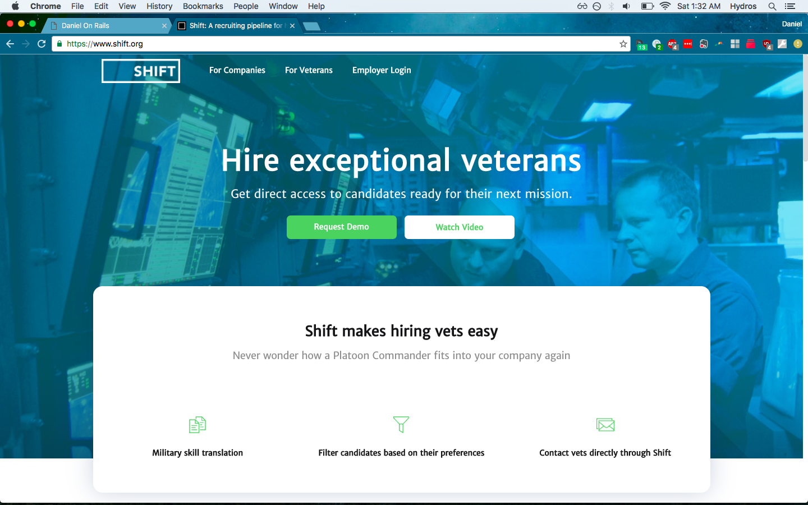

Daniel Shafer is a full-stack web developer with experience in business intelligence.
 Chrysalis
Chrysalis
Built with Ruby on Rails and React JS, Chrysalis makes it easy for people to get started with stocks by automating the math associated with investment analysis.
 Shift.org
Shift.org helps veterans and companies connect with each other to create meaningful post-military careers.
 Sovereign's Capital
Sovereign's Capital
Sovereign's Capital is a Durham, NC private equity firm.